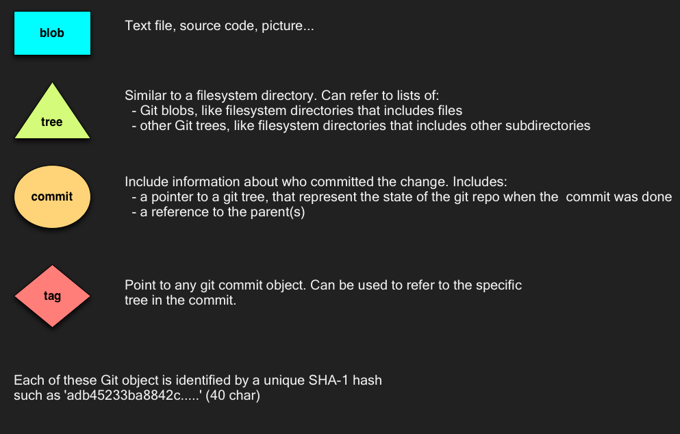
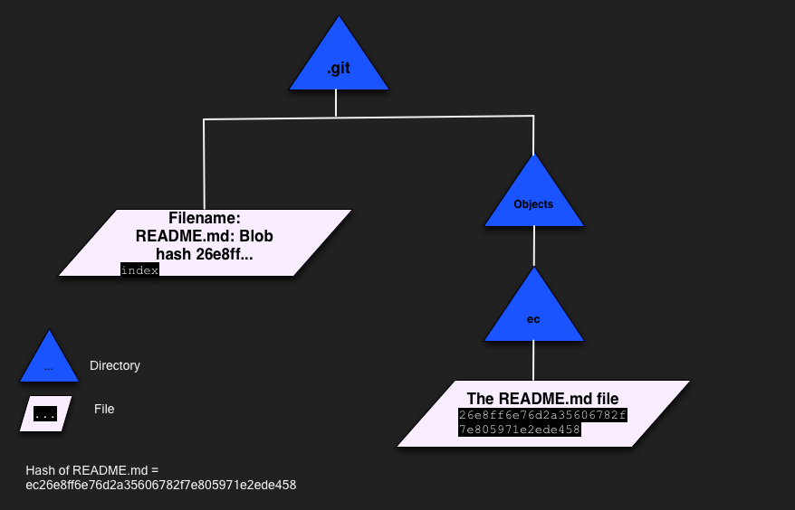
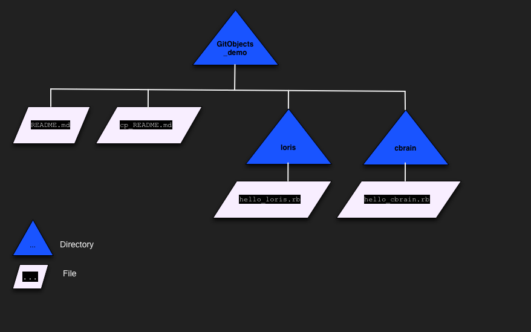
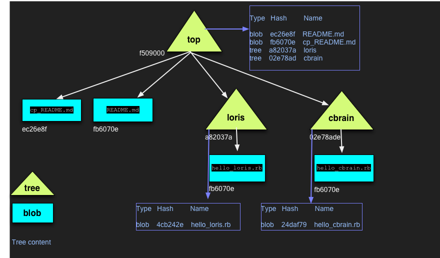
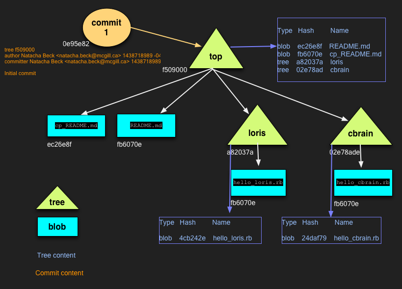
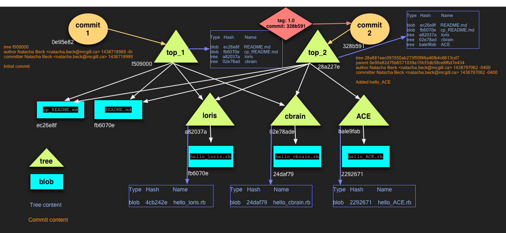

What are Git Objects
Natacha Beck
How is Git implemented?
- A content addressable filesystem
- So it is a key-value data-store; each file is stored by its SHA-1 hash
- When you insert data into Git, it will give you back a key to retrieve the content at any time
- Git store compressed versions of files
4 types of Git Objects
Let's play with Git Objects
~$ git init GitObjects_demo
~$ cd GitObjects_demo
~/GitObjects_demo$ ls .git/objects/
info pack
Git blob
~/GitObjects_demo$ echo "A simple example of GitObject." >> README.md
~/GitObjects_demo$ git add README.md
~/GitObjects_demo$ ls .git/objects/
ec info pack
~/GitObjects_demo$ ls .git/objects/ec/
26e8ff6e76d2a35606782f7e805971e2ede458
~/GitObjects_demo$ git cat-file -t ec26e8ff6e76d2a35606782f7e805971e2ede458
blob
~/GitObjects_demo$ git cat-file -p ec26e8ff6e76d2a35606782f7e805971e2ede458
A simple example of GitObject.
Git blob: diagram of .git/ directory
Object Storage
ruby > content = File.read("/Users/nbeck/GitObjects_demo/README.md")
=> "A simple example of GitObject.\n"
ruby > header = "blob #{content.size}\0"
=> "blob 31\u0000"
ruby > store = header + content
=> "blob 31\u0000A simple example of GitObject.\n"
ruby > sha1 = Digest::SHA1.hexdigest(store)
=> "ec26e8ff6e76d2a35606782f7e805971e2ede458"
- Git computes the SHA-1 hash based on a header and content of the file
- Header == type of object + " " + original size of content + null byte
The Git blob file internals
ruby > require "zlib"
=> true
ruby > file_content=IO.binread(".git/objects/ec/26e8ff6e76d2a35606782f7e805971e2ede458")
=> "x\x01K\xCA\xC9OR06dpT(\xCE\xCC-\xC8IUH\xADH\x04\xD3\xF9i\n\xEE\x99%\xFEIY\xA9\xC9%z\\\x00\xFE\x9D\f\xE3"
ruby > Zlib::Inflate.inflate(file_content)
=> "blob 31\x00A simple example of GitObject.\n"
- Content of blob files in the Git Object strore include:
- Object type
- Length of original content
- A null byte
- The original content
- And it is compressed using zlib
Object Storage
- Two files with identical contents will have the same hash value
- Two files with different contents will have different hash values
Object Storage
~/GitObjects_demo$ cp README.md cp_README.md
~/GitObjects_demo$ git add cp_README.md
~/GitObjects_demo$ ls .git/objects/
ec/ info/ pack/
~/GitObjects_demo$ ls .git/objects/ec/
26e8ff6e76d2a35606782f7e805971e2ede458
~/GitObjects_demo$ echo "Add some stuff to the cp_README.md." >> cp_README.md
~/GitObjects_demo$ git add cp_README.md
~/GitObjects_demo$ ls .git/objects/
fb/ ec/ info/ pack/
~/GitObjects_demo$ ls .git/objects/fb/
6070e6fefba6ded1443ee01e088b00f4332855
Git tree
mkdir loris cbrain
echo "puts 'Hello the loris team.'" > loris/hello_loris.rb
echo "puts 'Hello the cbrain team.'" > cbrain/hello_cbrain.rb
git add .
git commit -m "Initial commit"
mkdir loris cbrain
echo "puts 'Hello the loris team.'" > loris/hello_loris.rb
echo "puts 'Hello the cbrain team.'" > cbrain/hello_cbrain.rb
git add .
git commit -m "Initial commit"
Git tree: diagram of .git/ directory

Git tree: Git Object Store
~/GitObjects_demo$ git rev-list --objects --all
0e95e82d75b6571039a15fcf3db58ce8f6d7e434
f509000b0cbf7703584fd43e73c2e22aadd4a997
ec26e8ff6e76d2a35606782f7e805971e2ede458 README.md
02e78ade0da0479f18ede35769b0fcc89e02b80e cbrain
24daf799212e3f9221f942c1a76a7ecd1832f85a cbrain/hello_cbrain.rb
fb6070e6fefba6ded1443ee01e088b00f4332855 cp_README.md
a82037af721e1581db7de7d25e9f90c1d7b239ad loris
4cb2426ed15c0971f71b386800a61abbc00b07aa loris/hello_loris.rb
Git tree: Git Object Store
~/GitObjects_demo$ git cat-file -p f50900
100644 blob ec26e8ff6e76d2a35606782f7e805971e2ede458 README.md
040000 tree 02e78ade0da0479f18ede35769b0fcc89e02b80e cbrain
100644 blob fb6070e6fefba6ded1443ee01e088b00f4332855 cp_README.md
040000 tree a82037af721e1581db7de7d25e9f90c1d7b239ad loris
- Unix mode:
- 2 digits: file type
- 1 digit: set-uid/set-gid/sticky bits
- 3 digits: unix file mode user/group/other
- Object type
- SHA-1 hash
- Name of file or directory
Git tree: Git Object Store
Git commit
- When a commit is made, git creates a new commit object, which includes:
- A hash: points to the Git tree, that represents the files in the commit
- Committer: name and email of who did the commit with date/time
- Comment: a text comment that summarize the reason of commit
- The Git commit object is part of the object DB, it has a hash value which can be used to refer to it
Git commit
- In addition a commit may also include any and all git commit that are its parents:
- The first commit contains no parent
- The following commits, will have the previous commit as a parent
- If a commit has 2 or more parents, then a 'git merge' has occured
- A commit can contain an Author field; this one can be different to the committer
Git commit: Git Object Store
~/GitObjects_demo$ git rev-parse HEAD
0e95e82d75b6571039a15fcf3db58ce8f6d7e434
~/GitObjects_demo$ git cat-file -p 0e95e82d75b6571039a15fcf3db58ce8f6d7e434
tree f509000b0cbf7703584fd43e73c2e22aadd4a997
author Natacha Beck <natacha.beck@mcgill.ca> 1438718989 -0400
committer Natacha Beck <natacha.beck@mcgill.ca> 1438718989 -0400
Initial commit
Git commit: Git Object Store
Git commit: Git Object Store
~/GitObjects_demo$ mkdir ACE
~/GitObjects_demo$ echo "puts 'Hello the ACE team.'" > ACE/hello_ACE.rb
~/GitObjects_demo$ git add .
~/GitObjects_demo$ git commit -m "Added hello_ACE"
[master 328b591] Added hello_ACE
1 file changed, 1 insertion(+)
create mode 100644 ACE/hello_ACE.rb
Git commit: Git Object Store
~/GitObjects_demo$ git rev-parse HEAD
328b591a6e0c16387cf503f3db9f5b52e7795985
~/GitObjects_demo$ git cat-file -p 328b591a6e0c16387cf503f3db9f5b52e7795985
tree 28a881eac091550ab273f50f86a46fb4c6613cd7
parent 0e95e82d75b6571039a15fcf3db58ce8f6d7e434
author Natacha Beck <natacha.beck@mcgill.ca> 1438797062 -0400
committer Natacha Beck <natacha.beck@mcgill.ca> 1438797062 -0400
Added hello_ACE
Git commit: Git Object Store

Git tag
- Used to give name to a git commit, it include:
- Name: example 1.0
- A commit that the tag refers to
- A message
- Tagger's name/email and date/time
Git tag: Git Object Store
~/GitObjects_demo$ git tag 1.0 -m "this is version 1.0"
~/GitObjects_demo$ git show 1.0
tag 1.0
Tagger: Natacha Beck <natacha.beck@mcgill.ca>
Date: Wed Aug 5 15:09:08 2015 -0400
this is version 1.0
commit 328b591a6e0c16387cf503f3db9f5b52e7795985
Author: Natacha Beck <natacha.beck@mcgill.ca>
Date: Wed Aug 5 13:51:02 2015 -0400
Added hello_ACE
Git commit: Git Object Store
Git tag: Git Object Store
~/GitObjects_demo$ git tag 0.0 -m "this is version 0.0" 0e95e82d75
~/GitObjects_demo$ git show 0.0
tag 0.0
Tagger: Natacha Beck <natacha.beck@mcgill.ca>
Date: Wed Aug 5 15:12:58 2015 -0400
this is version 0.0
commit 0e95e82d75b6571039a15fcf3db58ce8f6d7e434
Author: Natacha Beck <natacha.beck@mcgill.ca>
Date: Tue Aug 4 16:09:49 2015 -0400
Initial commit